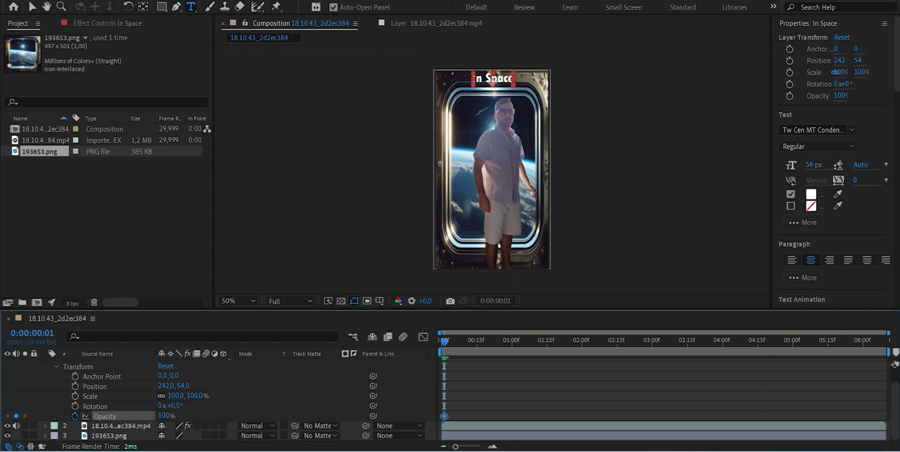

Este projeto focou-se na aplicação de técnicas de composição digital e efeitos visuais (VFX) para integrar elementos gráficos e filmagens de diferentes fontes. O objetivo foi criar um produto de vídeo coeso e profissional, manipulando e combinando os vários elementos em pós-produção.
O desenvolvimento do projeto foi centrado no ecossistema da Adobe, utilizando software padrão da indústria para motion graphics e edição de vídeo:
O fluxo de trabalho deste projeto seguiu as etapas de uma produção de efeitos visuais:
O resultado final foi um vídeo curto que demonstra a integração credível de diferentes fontes visuais. As principais aprendizagens foram: